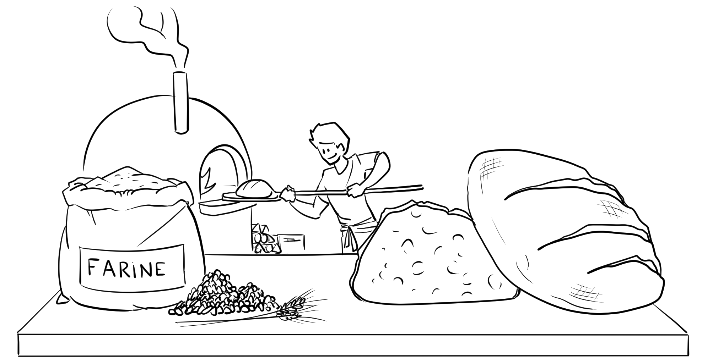

Le concept : du grain au pain 🌾

La boulangerie paysanne est une démarche globale où l’artisan maîtrise toute la chaîne de production : depuis les semis et la culture des céréales, en passant par la mouture de la farine, jusqu’à la cuisson du pain et sa vente directe.
1. Les Céréales 🌱
Nous cultivons du blé tendre (froment), du seigle et du petit épeautre sur 15 hectares. Dans une démarche d’agroécologie, nos cultures suivent une rotation sur 6 ans :
- 2 années de blé
- 1 année de seigle ou petit-épeautre
- 3 années de luzerne/dactyle : cela régénère le sol et nourrit nos vaches !
Nos céréales sont re-semées chaque année. Elles s’adaptent au terrain pour former un "blé population". Le rendement (3,5 T/ha) est plus faible que dans l'industrie, mais garantit une haute résilience.
2. La Meunerie ⚙️
Une fois récoltées, les céréales sont triées et brossées pour enlever les poussières. Le grain descend ensuite par gravité dans notre moulin de type Astrier.
Deux meules de pierre broient doucement le grain. En sortie, un tamis rotatif sépare la farine du son (l'enveloppe du grain) :
- Tamis fin : farine blanche (T45, T65).
- Tamis large : farine complète (T80, T110...).
Notre moulin extrait 15 kg de farine par heure. Cette farine est stockée une semaine avant d'être utilisée : on dit qu’elle « planche ».
3. La Boulangerie 🥖
C’est le cœur de notre activité ! Ici, le façonnage se fait manuellement, avec une fermentation lente au levain naturel et une cuisson au feu de bois.
Les avantages du levain :
- Indépendance totale
- Goût authentique et incomparable
- Excellente conservation
- Meilleure digestibilité et apport nutritif
Notre grand four maçonné (marque Llopis, 3m de diamètre) possède une sole tournante. Sa chaleur constante permet de cuire jusqu'à 106 kg de pain en continu !
👨🍳 Avec 600 kg de pain, brioches et pâtes par semaine, cet atelier permet de nourrir plus de 300 coopérateurs et nos épiceries locales !